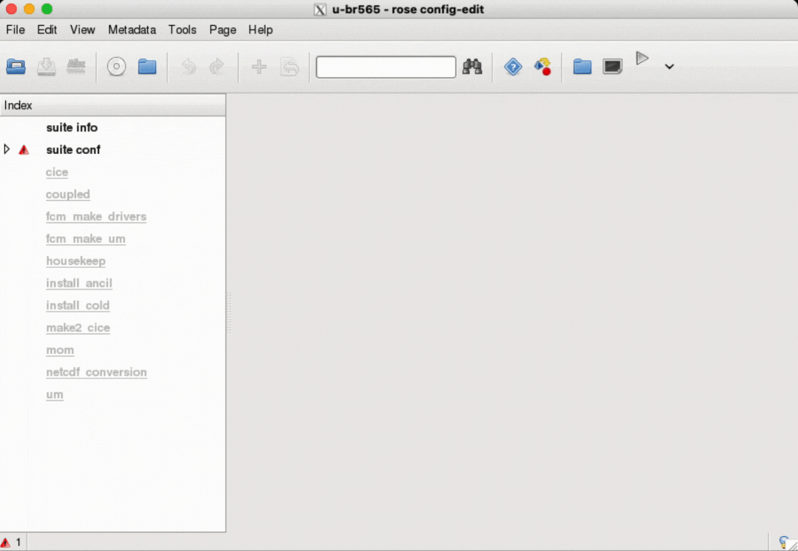
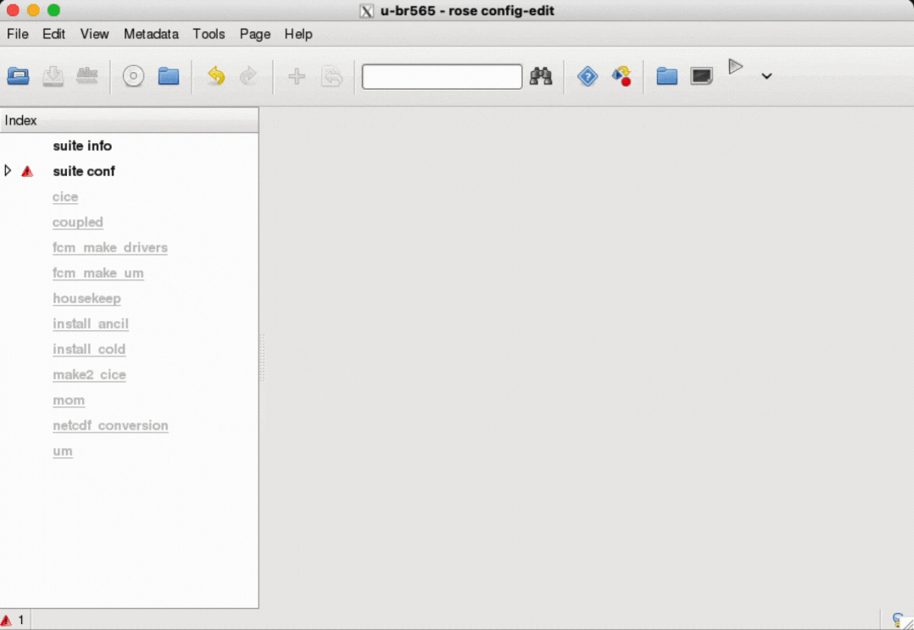

Copy, Edit, and Run an ACCESS-CM2 suite
ACCESS-CM2 is a set of sub-models (eg. UM, MOM, CICE, CABLE, OASIS) with a range of model parameters, input data, and computer related information, that need to be packaged together as a suite in order to run.
Each ACCESS-CM2 suite has an ID, in the format
Typically, an existing suite is copied and then edited as needed for a particular run.
Each ACCESS-CM2 suite has an ID, in the format
u-[suite-name], with [suite-name] being a unique identifier (e.g. u-br565 is the CMIP6 release preindustrial experiment suite).
Typically, an existing suite is copied and then edited as needed for a particular run.
Copy ACCESS-CM2 suites with Rosie
Rosie is an SVN repository wrapper with a set of options to work with ACCESS-CM2 suites.
To copy an existing suite, on accessdev:
The suites are created in the user's accessdev home directory, under
The suite directory usually contains 2 subdirectories and 3 files:
To copy an existing suite, on accessdev:
-
Run
mosrs-authto authenticate using your MOSRS credentials (see Met Office Science Repository Service (MOSRS) for troubleshooting):

-
Run
rosie checkout [suite-ID]to create a local copy of the[suite-ID]from the UKMO repository (used mostly for testing and examining existing suites):
Alternatively, runrosie copy [suite-ID]to create a new full copy (local and remote in the UKMO repository) rather than just a local copy. When a new suite is created in this way, a new unique name is generated within the repository, and populated with some descriptive information about the suite along with all the initial configuration details:

rosie options, run rosie help.
The suites are created in the user's accessdev home directory, under
~/roses/[suite-ID].
The suite directory usually contains 2 subdirectories and 3 files:
app--> directory containing the configuration files for the various tasks within the suite.meta--> directory containing the GUI metadata.rose-suite.conf--> the main suite configuration file.rose-suite.info--> suite information file.suite.rc--> the Cylc control script file (Jinja2 language).

Edit an ACCESS-CM2 suite configuration with Rose GUI
Rose is a configuration editor which can be used to view, edit, or run an ACCESS-CM2 suite.
To edit a suite configuration, on accessdev:
To edit a suite configuration, on accessdev:
-
Run
rose edit &(the&is optional and keeps the terminal prompt active while runs the GUI as a separate process) from inside the relevant suite directory (e.g.~/roses/u-[suite_ID]) to open the Rose GUI and inspect the suite information.
-
There are many settings that can be changed in a Rose GUI. However, there are a few that we definitely want to check and edit before we run a suite:
-
NCI Project
To make sure we run the suite under the NCI project we belong to, we can navigate to suite conf --> Machine and Runtime Options, edit the Compute project field, and click the Save button . (Check how to connect to a project if you have not joined one yet).
If, for example, we belong to the tm70 Project (ACCESS-NRI), we will inserttm70in the Compute project field:
 -
Total Run length / Cycling frequency
ACCESS-CM2 suites are often run in multiple steps, each of them constituting a cycle, with the job scheduler resubmitting the suite every chosen Cycling frequency, until the Total Run length is met.
To modify these parameters, we can navigate to suite conf --> Run Initialisation and Cycling, edit the respective fields, and click the Save button . The values are in the ISO 8601 Duration format.
If, for example, we want to run the suite for a total of 50 Years, and resubmit every year, we will change Total Run length toP50Yand Cycling frequency toP1Y. Note that the current maximum Cycling frequency is 2 years:
 -
Wallclock time
The Wallclock time is the time requested by the PBS job to run a single cycle. If this time is not enough for the suite to end its cycle, our job will be terminated before the suite can complete the run.
If we change the Cycling frequency, we might need to change the Wallclock time accordingly.
The time needed for the suite to run a full cycle depends on several factors, but a good estimation can be 4 hours per simulated year.
To modify the Wallclock time, we can navigate to suite conf --> Run Initialisation and Cycling, edit the respective field, and click the Save button . The value is in the ISO 8601 Duration format.
-
NCI Project
Run an ACCESS-CM2 suite
After completing all the modifications to the suite, we are ready to run it.
ACCESS-CM2 suites run on Gadi(TO DO check link) through a PBS job submission.
When the suite gets run, the suite configuration files are copied on Gadi under
An ACCESS-CM2 suite is constituted by several tasks (such as checking out code repositories, compiling and building the different model components, running the model, etc.). The workflow of these tasks is controlled by Cylc.
Cylc (pronounced ‘silk’), is a workflow manager that automatically executes tasks according to the model main cycle script
To run an ACCESS-CM2 suite, on accessdev:
Note that, at this stage, it is possible to close the Cylc GUI. If you want to open it again, just run:
ACCESS-CM2 suites run on Gadi(TO DO check link) through a PBS job submission.
When the suite gets run, the suite configuration files are copied on Gadi under
/scratch/[Project]/$USER/cylc-run/[suite-ID], and a symbolic link to this folder is also created in the $USER's home directory under ~/cylc-run/[suite-ID].
An ACCESS-CM2 suite is constituted by several tasks (such as checking out code repositories, compiling and building the different model components, running the model, etc.). The workflow of these tasks is controlled by Cylc.
Cylc (pronounced ‘silk’), is a workflow manager that automatically executes tasks according to the model main cycle script
suite.rc. Cylc deals with how the job will be run and the time steps of each sub-model, as well as monitoring all the tasks and reporting any error that might occur.
To run an ACCESS-CM2 suite, on accessdev:
-
Run
rose suite-runfrom inside the relevant suite directory (e.g.~/roses/u-[suite_ID]) to run the initial tasks. - After these few small tasks get executed, the Cylc GUI will open up and you will be able to see and control all the different tasks in the suite as they are run.

Note that, at this stage, it is possible to close the Cylc GUI. If you want to open it again, just run:
gcylc ..... TO DO check command.
Check for errors and basic debugging
It is quite common, especially during the first few runs, to experience errors and job failures.
TO DO
TO DO
Suite output files
TO DO